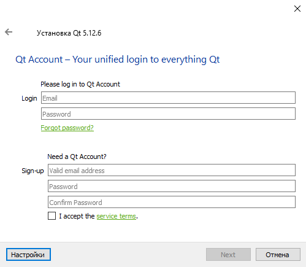

Фреймверк Qt, хоть и является Open Source проектом, но активно пытается огораживать пользователей и разработчиков от свободного использования этого ПО. Менеджеры Qt постоянно придумывают различные меры, которые формально не противоречат лицензии GPL, но мешают свободно и просто устанавливать необходимые инструменты экосистемы Qt.
Одной из таких мер является Qt-аккаунт. Он бесплатен, и никаких ограничений на регистрацию в нем (пока) нет. Зачем он нужен? Ну, с некоторых пор в процедуре установки Qt-фреймверка из официального инсталлятора в обязательном порядке требуется ввод логина/пароля от Qt-аккаунта. Если Qt-аккаунта нет, установить фреймверк Qt из официального полного инсталлятора не получится. То есть, пользователь выкачивает инсталлятор размером ~4GB, в котором есть все файлы для инсталляции, но без Qt-аккаунта развернуть файлы фреймверка не может.

Однако, обойти данное ограничение все-таки можно, просто нужно знать как.
Установка Qt без запроса логина/пароля
Оказывается, запрос логина/пароля при установке Qt происходит только в случае, если инсталлятор обнаруживает доступ в интернет и видит доступными сервера компании Qt. Действительно, если нет интернета, то как проверять правильность ввода логина/пароля? Никак. А очень часто приходится ставить Qt в местах, где интернета просто не предусмотрено. В инсталляторе Qt это предусмотрели, и сделали пропуск процедуры регистрации в случае отсутствия интернет-соединения, просто этот момент никак не поясняют и не афишируют.
Таким образом, в момент инсталляции можно просто потушить интернет-соединение, и установить Qt без Qt-аккаунта. Это можно делать вручную, а можно, при необходимости, автоматизировать. В моих скриптах Ansible под Linux это происходит так:
- name: Блокировка интернет-соединения, чтобы не запрашивался Qt-аккаунт в инсталляторе
shell: |
iptables -A INPUT -m state --state ESTABLISHED,RELATED -j ACCEPT
iptables -A OUTPUT -m state --state ESTABLISHED,RELATED -j ACCEPT
iptables -A INPUT -p tcp --dport 22 -j ACCEPT
iptables -A OUTPUT -p tcp --dport 22 -j ACCEPT
iptables -A OUTPUT -j DROP
... команды инсталляции Qt ...
- name: Разблокирование интернет-соединения
shell: |
iptables -F
iptables -P INPUT ACCEPT
iptables -P OUTPUT ACCEPT
Видно, что в этих командах остается рабочим порт SSH, остальные соединения временно перекрываются. Что-то подобное можно сделать и в Windows, это отдельный разговор. Факт в том, что при отсутствии интернет-соединения, нет необходимости в наличии логина/пароля от Qt аккаунта.
Не хочется крутить iptables? Можно просто выдернуть сетевой кабель из компьютера, устновить Qt, потом вставить кабель на место. В случае WiFi соединения можно просто на время потушить это соединение.
Установка фреймверка Qt через консоль
Графический инсталлятор Qt может так же работать и в консольном режиме. Таким образом в Linux можно установить Qt из официального инсталлятора даже при отсутствии графического окружения X11. Для инсталляции в консольном режиме используется опция инсталляции --script, в которой указывается файл скрипта в формате *.qs:
cd /home/user/work/install
./qt-opensource-linux-x64-5.9.6.run --platform minimal --script install.qs
В данном скрипте описываются действия, которые должны поисходить при появлении того или иного окна инсталлятора. Скрипт пишется на языке JavaScript. Окна инсталлятора создаются "виртуально" внутри движка инсталлятора, и это позволяет выполнять действия так, как будто их выполняет пользователь.
Инсталлятор фреймверка Qt сделан с помощью инструмента Qt Installer Framework, который предназначен для создания инсталляторов к ПО. Подробнее об этом инструменте можно прочитать здесь: https://doc.qt.io/qtinstallerframework/ifw-overview.html
А формат QS-скриптов подробно описан в следующей документации: https://doc.qt.io/qtinstallerframework/noninteractive.html
Для Qt версии 5.9.6 файл скрипта install.qs может выглядеть так:
function Controller() {
installer.autoRejectMessageBoxes();
installer.installationFinished.connect(function() {
gui.clickButton(buttons.NextButton);
})
}
Controller.prototype.WelcomePageCallback = function() {
// click delay here because the next button is initially disabled for ~1 second
gui.clickButton(buttons.NextButton, 3000);
}
Controller.prototype.CredentialsPageCallback = function() {
gui.clickButton(buttons.NextButton);
}
Controller.prototype.IntroductionPageCallback = function() {
gui.clickButton(buttons.NextButton);
}
Controller.prototype.TargetDirectoryPageCallback = function()
{
gui.currentPageWidget().TargetDirectoryLineEdit.setText("/opt/qt_5_9_6");
gui.clickButton(buttons.NextButton);
}
Controller.prototype.ComponentSelectionPageCallback = function() {
var widget = gui.currentPageWidget();
widget.selectAll();
// Можно выбирать компоненты отдельно
// widget.selectComponent("qt.55.gcc_64");
// widget.selectComponent("qt.55.qtquickcontrols");
// И можно отключать компоненты отдельно
// widget.deselectComponent("qt.tools.qtcreator");
// widget.deselectComponent("qt.55.qt3d");
// widget.deselectComponent("qt.55.qtcanvas3d");
// widget.deselectComponent("qt.55.qtlocation");
// widget.deselectComponent("qt.55.qtquick1");
// widget.deselectComponent("qt.55.qtscript");
// widget.deselectComponent("qt.55.qtwebengine");
// widget.deselectComponent("qt.extras");
// widget.deselectComponent("qt.tools.doc");
// widget.deselectComponent("qt.tools.examples");
gui.clickButton(buttons.NextButton);
}
Controller.prototype.LicenseAgreementPageCallback = function() {
gui.currentPageWidget().AcceptLicenseRadioButton.setChecked(true);
gui.clickButton(buttons.NextButton);
}
Controller.prototype.StartMenuDirectoryPageCallback = function() {
gui.clickButton(buttons.NextButton);
}
Controller.prototype.ReadyForInstallationPageCallback = function()
{
gui.clickButton(buttons.NextButton);
}
Controller.prototype.FinishedPageCallback = function() {
var checkBoxForm = gui.currentPageWidget().LaunchQtCreatorCheckBoxForm;
if (checkBoxForm && checkBoxForm.launchQtCreatorCheckBox) {
checkBoxForm.launchQtCreatorCheckBox.checked = false;
}
gui.clickButton(buttons.FinishButton);
}
Опция --platform задает плагин, который используется при инсталляции. Для консольной инсталляции указывается плагин minimal.
Более подробно об опциях инсталлятора в консольном режиме (Command Line Interface) написано здесь: https://doc.qt.io/qtinstallerframework/ifw-cli.html
* * *
Хинт! Ссылки на прямое скачивание инсталлятора Qt для различных версий фреймверка и различный аппаратные платформы можно найти в статье:
Прямые ссылки на оффлайн-инсталлятор Qt версий 5.12.x
Данные ссылки активны на январь 2021 года.